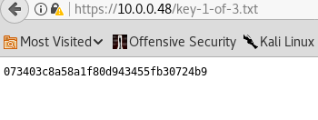

Attacker IP: 10.0.0.22
Target IP: 10.0.0.48
Nmap scan report for 10.0.0.48
Host is up (0.0018s latency).
Not shown: 65532 filtered ports
PORT STATE SERVICE VERSION
22/tcp closed ssh
80/tcp open http Apache httpd
|_http-server-header: Apache
|_http-title: Site doesn't have a title (text/html).
443/tcp open ssl/http Apache httpd
|_http-server-header: Apache
|_http-title: Site doesn't have a title (text/html).
| ssl-cert: Subject: commonName=www.example.com
| Not valid before: 2015-09-16T10:45:03
|_Not valid after: 2025-09-13T10:45:03
MAC Address: 08:00:27:3B:47:39 (Oracle VirtualBox virtual NIC)
Device type: general purpose
Running: Linux 3.X|4.X
OS CPE: cpe:/o:linux:linux_kernel:3 cpe:/o:linux:linux_kernel:4
OS details: Linux 3.10 - 4.11
dirb:
---- Scanning URL: http://10.0.0.48/ ----
==> DIRECTORY: http://10.0.0.48/0/
==> DIRECTORY: http://10.0.0.48/admin/
+ http://10.0.0.48/atom (CODE:301|SIZE:0)
==> DIRECTORY: http://10.0.0.48/audio/
==> DIRECTORY: http://10.0.0.48/blog/
==> DIRECTORY: http://10.0.0.48/css/
+ http://10.0.0.48/dashboard (CODE:302|SIZE:0)
+ http://10.0.0.48/favicon.ico (CODE:200|SIZE:0)
==> DIRECTORY: http://10.0.0.48/feed/
==> DIRECTORY: http://10.0.0.48/image/
==> DIRECTORY: http://10.0.0.48/Image/
==> DIRECTORY: http://10.0.0.48/images/
+ http://10.0.0.48/index.html (CODE:200|SIZE:1188)
+ http://10.0.0.48/index.php (CODE:301|SIZE:0)
+ http://10.0.0.48/intro (CODE:200|SIZE:516314)
==> DIRECTORY: http://10.0.0.48/js/
+ http://10.0.0.48/license (CODE:200|SIZE:19930)
+ http://10.0.0.48/login (CODE:302|SIZE:0)
+ http://10.0.0.48/page1 (CODE:301|SIZE:0)
+ http://10.0.0.48/phpmyadmin (CODE:403|SIZE:94)
+ http://10.0.0.48/rdf (CODE:301|SIZE:0)
+ http://10.0.0.48/readme (CODE:200|SIZE:7334)
+ http://10.0.0.48/robots (CODE:200|SIZE:41)
+ http://10.0.0.48/robots.txt (CODE:200|SIZE:41)
+ http://10.0.0.48/rss (CODE:301|SIZE:0)
+ http://10.0.0.48/rss2 (CODE:301|SIZE:0)
+ http://10.0.0.48/sitemap (CODE:200|SIZE:0)
+ http://10.0.0.48/sitemap.xml (CODE:200|SIZE:0)
==> DIRECTORY: http://10.0.0.48/video/
==> DIRECTORY: http://10.0.0.48/wp-admin/
+ http://10.0.0.48/wp-config (CODE:200|SIZE:0)
==> DIRECTORY: http://10.0.0.48/wp-content/
+ http://10.0.0.48/wp-cron (CODE:200|SIZE:0)
==> DIRECTORY: http://10.0.0.48/wp-includes/
+ http://10.0.0.48/wp-links-opml (CODE:200|SIZE:228)
+ http://10.0.0.48/wp-load (CODE:200|SIZE:0)
+ http://10.0.0.48/wp-login (CODE:200|SIZE:2589)
+ http://10.0.0.48/wp-mail (CODE:403|SIZE:3018)
+ http://10.0.0.48/wp-settings (CODE:500|SIZE:0)
+ http://10.0.0.48/wp-signup (CODE:302|SIZE:0)
+ http://10.0.0.48/xmlrpc (CODE:405|SIZE:42)
+ http://10.0.0.48/xmlrpc.php (CODE:405|SIZE:42)
---- Entering directory: http://10.0.0.48/0/ ----
+ http://10.0.0.48/0/atom (CODE:301|SIZE:0)
==> DIRECTORY: http://10.0.0.48/0/feed/
+ http://10.0.0.48/0/index.php (CODE:301|SIZE:0)
+ http://10.0.0.48/0/rdf (CODE:301|SIZE:0)
+ http://10.0.0.48/0/rss (CODE:301|SIZE:0)
+ http://10.0.0.48/0/rss2 (CODE:301|SIZE:0)
^? ^?
---- Entering directory: http://10.0.0.48/admin/ ----
It's obvious that it's wordpress.
Here's one of the keys I found via robots.txt file.

I also found a dictionary file via robots.txt. I assume it'll be used later for brute force (?) and it contains words related to the show.
Wordpress version obtained via wpscan: [+] WordPress version 4.3.16
Nikto:
+ Server: Apache
+ The X-XSS-Protection header is not defined. This header can hint to the user agent to protect against some forms of XSS
+ The X-Content-Type-Options header is not set. This could allow the user agent to render the content of the site in a different fashion to the MIME type
+ Retrieved x-powered-by header: PHP/5.5.29
+ No CGI Directories found (use '-C all' to force check all possible dirs)
+ Server leaks inodes via ETags, header found with file /robots.txt, fields: 0x29 0x52467010ef8ad
+ Uncommon header 'tcn' found, with contents: list
+ Apache mod_negotiation is enabled with MultiViews, which allows attackers to easily brute force file names. See http://www.wisec.it/sectou.php?id=4698ebdc59d15. The following alternatives for 'index' were found: index.html, index.php
+ OSVDB-3092: /admin/: This might be interesting...
+ Uncommon header 'link' found, with contents: <http://10.0.0.48/?p=23>; rel=shortlink
+ /wp-links-opml.php: This WordPress script reveals the installed version.
+ OSVDB-3092: /license.txt: License file found may identify site software.
+ /admin/index.html: Admin login page/section found.
+ Cookie wordpress_test_cookie created without the httponly flag
+ /wp-login/: Admin login page/section found.
+ /wordpress/: A Wordpress installation was found.
+ /wp-admin/wp-login.php: Wordpress login found
+ /blog/wp-login.php: Wordpress login found
+ /wp-login.php: Wordpress login found
wpscan enum results:
[+] We found 7 plugins:
[+] Name: akismet
| Latest version: 4.0.7
| Last updated: 2018-05-28T16:19:00.000Z
| Location: http://10.0.0.48/wp-content/plugins/akismet/
[!] We could not determine a version so all vulnerabilities are printed out
[!] Title: Akismet 2.5.0-3.1.4 - Unauthenticated Stored Cross-Site Scripting (XSS)
Reference: https://wpvulndb.com/vulnerabilities/8215
Reference: http://blog.akismet.com/2015/10/13/akismet-3-1-5-wordpress/
Reference: https://blog.sucuri.net/2015/10/security-advisory-stored-xss-in-akismet-wordpress-plugin.html
[i] Fixed in: 3.1.5
[+] Name: all-in-one-seo-pack - v2.0.4
| Last updated: 2018-06-07T19:06:00.000Z
| Location: http://10.0.0.48/wp-content/plugins/all-in-one-seo-pack/
| Readme: http://10.0.0.48/wp-content/plugins/all-in-one-seo-pack/readme.txt
[!] The version is out of date, the latest version is 2.6.1
[!] Title: All in One SEO Pack <= 2.1.5 - aioseop_functions.php new_meta Parameter XSS
Reference: https://wpvulndb.com/vulnerabilities/6888
Reference: http://blog.sucuri.net/2014/05/vulnerability-found-in-the-all-in-one-seo-pack-wordpress-plugin.html
[i] Fixed in: 2.1.6
[!] Title: All in One SEO Pack <= 2.1.5 - Unspecified Privilege Escalation
Reference: https://wpvulndb.com/vulnerabilities/6889
Reference: http://blog.sucuri.net/2014/05/vulnerability-found-in-the-all-in-one-seo-pack-wordpress-plugin.html
[i] Fixed in: 2.1.6
[!] Title: All in One SEO Pack <= 2.2.5.1 - Information Disclosure
Reference: https://wpvulndb.com/vulnerabilities/7881
Reference: http://jvn.jp/en/jp/JVN75615300/index.html
Reference: http://semperfiwebdesign.com/blog/all-in-one-seo-pack/all-in-one-seo-pack-release-history/
Reference: https://cve.mitre.org/cgi-bin/cvename.cgi?name=CVE-2015-0902
[i] Fixed in: 2.2.6
[!] Title: All in One SEO Pack <= 2.2.6.1 - Cross-Site Scripting (XSS)
Reference: https://wpvulndb.com/vulnerabilities/7916
Reference: https://blog.sucuri.net/2015/04/security-advisory-xss-vulnerability-affecting-multiple-wordpress-plugins.html
[i] Fixed in: 2.2.6.2
[!] Title: All in One SEO Pack <= 2.3.6.1 - Unauthenticated Stored Cross-Site Scripting (XSS)
Reference: https://wpvulndb.com/vulnerabilities/8538
Reference: http://seclists.org/fulldisclosure/2016/Jul/23
Reference: https://semperfiwebdesign.com/blog/all-in-one-seo-pack/all-in-one-seo-pack-release-history/
Reference: https://sumofpwn.nl/advisory/2016/persistent_cross_site_scripting_in_all_in_one_seo_pack_wordpress_plugin.html
Reference: https://wptavern.com/all-in-one-seo-2-3-7-patches-persistent-xss-vulnerability
Reference: https://www.wordfence.com/blog/2016/07/xss-vulnerability-all-in-one-seo-pack-plugin/
[i] Fixed in: 2.3.7
[!] Title: All in One SEO Pack <= 2.3.7 - Unauthenticated Stored Cross-Site Scripting (XSS)
Reference: https://wpvulndb.com/vulnerabilities/8558
Reference: https://www.wordfence.com/blog/2016/07/new-xss-vulnerability-all-in-one-seo-pack/
Reference: https://semperfiwebdesign.com/blog/all-in-one-seo-pack/all-in-one-seo-pack-release-history/
[i] Fixed in: 2.3.8
[+] Name: all-in-one-wp-migration - v2.0.4
| Last updated: 2018-05-31T15:25:00.000Z
| Location: http://10.0.0.48/wp-content/plugins/all-in-one-wp-migration/
| Readme: http://10.0.0.48/wp-content/plugins/all-in-one-wp-migration/readme.txt
[!] The version is out of date, the latest version is 6.69
[!] Title: All-in-One WP Migration <= 2.0.4 - Unauthenticated Database Export
Reference: https://wpvulndb.com/vulnerabilities/7857
Reference: http://www.pritect.net/blog/all-in-one-wp-migration-2-0-4-security-vulnerability
Reference: https://www.rapid7.com/db/modules/auxiliary/gather/wp_all_in_one_migration_export
[i] Fixed in: 2.0.5
[!] Title: All-in-One WP Migration <= 6.45 - Reflected Cross-Site Scripting (XSS)
Reference: https://wpvulndb.com/vulnerabilities/8851
Reference: https://wordpress.org/plugins/all-in-one-wp-migration/#developers
[i] Fixed in: 6.46
[+] Name: google-analytics-for-wordpress - v5.3.2
| Last updated: 2018-05-14T13:15:00.000Z
| Location: http://10.0.0.48/wp-content/plugins/google-analytics-for-wordpress/
| Readme: http://10.0.0.48/wp-content/plugins/google-analytics-for-wordpress/readme.txt
[!] The version is out of date, the latest version is 7.0.6
[!] Title: Google Analytics by Yoast <= 5.3.2 - Cross-Site Scripting (XSS)
Reference: https://wpvulndb.com/vulnerabilities/7838
Reference: http://packetstormsecurity.com/files/130716/
[i] Fixed in: 5.3.3
[!] Title: Google Analytics by Yoast <= 5.3.2 - Stored Cross-Site Scripting (XSS)
Reference: https://wpvulndb.com/vulnerabilities/7856
Reference: https://yoast.com/ga-plugin-security-update-more/
Reference: http://klikki.fi/adv/yoast_analytics.html
Reference: http://packetstormsecurity.com/files/130935/
[i] Fixed in: 5.3.3
[!] Title: Google Analytics by Yoast <= 5.3.3 - Unauthenticated Cross-Site Scripting (XSS)
Reference: https://wpvulndb.com/vulnerabilities/7914
Reference: https://yoast.com/coordinated-security-release/
Reference: https://blog.sucuri.net/2015/04/security-advisory-xss-vulnerability-affecting-multiple-wordpress-plugins.html
Reference: http://klikki.fi/adv/yoast_analytics2.html
[i] Fixed in: 5.4
[!] Title: Google Analytics by Yoast <= 5.4.4 - Authenticated Stored Cross-Site Scripting (XSS)
Reference: https://wpvulndb.com/vulnerabilities/8147
Reference: https://security.dxw.com/advisories/xss-in-google-analytics-by-yoast-premium-by-privileged-users/
[i] Fixed in: 5.4.5
[+] Name: google-sitemap-generator - v4.0.7.1
| Last updated: 2018-04-25T15:06:00.000Z
| Location: http://10.0.0.48/wp-content/plugins/google-sitemap-generator/
| Readme: http://10.0.0.48/wp-content/plugins/google-sitemap-generator/readme.txt
[!] The version is out of date, the latest version is 4.0.9
[!] Title: Google XML Sitemaps <= 4.0.8 - Authenticated Reflected XSS (via HOST header)
Reference: https://wpvulndb.com/vulnerabilities/8762
Reference: https://plugins.trac.wordpress.org/browser/google-sitemap-generator/trunk/sitemap-ui.php#L1310
[i] Fixed in: 4.0.9
[+] Name: jetpack - v3.3.2
| Last updated: 2018-06-08T19:57:00.000Z
| Location: http://10.0.0.48/wp-content/plugins/jetpack/
| Readme: http://10.0.0.48/wp-content/plugins/jetpack/readme.txt
[!] The version is out of date, the latest version is 6.2.1
[!] Title: Jetpack 3.0-3.4.2 - Cross-Site Scripting (XSS)
Reference: https://wpvulndb.com/vulnerabilities/7915
Reference: https://blog.sucuri.net/2015/04/security-advisory-xss-vulnerability-affecting-multiple-wordpress-plugins.html
Reference: https://jetpack.me/2015/04/20/jetpack-3-4-3-coordinated-security-update/
[i] Fixed in: 3.4.3
[!] Title: Jetpack <= 3.5.2 - Unauthenticated DOM Cross-Site Scripting (XSS)
Reference: https://wpvulndb.com/vulnerabilities/7964
Reference: https://blog.sucuri.net/2015/05/jetpack-and-twentyfifteen-vulnerable-to-dom-based-xss-millions-of-wordpress-websites-affected-millions-of-wordpress-websites-affected.html
[i] Fixed in: 3.5.3
[!] Title: Jetpack <= 3.7.0 - Stored Cross-Site Scripting (XSS)
Reference: https://wpvulndb.com/vulnerabilities/8201
Reference: https://jetpack.me/2015/09/30/jetpack-3-7-1-and-3-7-2-security-and-maintenance-releases/
Reference: https://blog.sucuri.net/2015/10/security-advisory-stored-xss-in-jetpack.html
[i] Fixed in: 3.7.1
[!] Title: Jetpack <= 3.7.0 - Information Disclosure
Reference: https://wpvulndb.com/vulnerabilities/8202
Reference: https://jetpack.me/2015/09/30/jetpack-3-7-1-and-3-7-2-security-and-maintenance-releases/
[i] Fixed in: 3.7.1
[!] Title: Jetpack <= 3.9.1 - LaTeX HTML Element XSS
Reference: https://wpvulndb.com/vulnerabilities/8472
Reference: https://jetpack.com/2016/02/25/jetpack-3-9-2-maintenance-and-security-release/
Reference: https://github.com/Automattic/jetpack/commit/dbc33b9105c4dbb0de81544e682a8b6d5ab7e446
[i] Fixed in: 3.9.2
[!] Title: Jetpack 2.0-4.0.2 - Shortcode Stored Cross-Site Scripting (XSS)
Reference: https://wpvulndb.com/vulnerabilities/8500
Reference: https://jetpack.com/2016/05/27/jetpack-4-0-3-critical-security-update/
Reference: http://wptavern.com/jetpack-4-0-3-patches-a-critical-xss-vulnerability
Reference: https://blog.sucuri.net/2016/05/security-advisory-stored-xss-jetpack-2.html
Reference: https://cve.mitre.org/cgi-bin/cvename.cgi?name=CVE-2016-10706
[i] Fixed in: 4.0.3
[!] Title: Jetpack <= 4.0.3 - Multiple Vulnerabilities
Reference: https://wpvulndb.com/vulnerabilities/8517
Reference: https://jetpack.com/2016/06/20/jetpack-4-0-4-bug-fixes/
Reference: https://cve.mitre.org/cgi-bin/cvename.cgi?name=CVE-2016-10705
[i] Fixed in: 4.0.4
[+] Name: wptouch - v3.7.3
| Last updated: 2018-05-16T18:45:00.000Z
| Location: http://10.0.0.48/wp-content/plugins/wptouch/
| Readme: http://10.0.0.48/wp-content/plugins/wptouch/readme.txt
[!] The version is out of date, the latest version is 4.3.28
[!] Title: WPtouch Mobile Plugin <= 3.7.5.3 - Cross-Site Scripting (XSS)
Reference: https://wpvulndb.com/vulnerabilities/7920
Reference: https://blog.sucuri.net/2015/04/security-advisory-xss-vulnerability-affecting-multiple-wordpress-plugins.html
[i] Fixed in: 3.7.6
Out of the wpscan results this jumps out: All-in-One WP Migration <= 2.0.4 - Unauthenticated Database Export There is a metasploit module for it but it didn't seem to work.
I used wpscan to brute force wordpress with admin username and the dictionary i got earlier. This would take to long so I had to stop it.
Registration on the site is disabled.
Time to get a hint from a walkthrough. Username is elliot...
I started brute force again with that name.

It works:

I used plugin editor feature to edit a php file to add a backdoor and it looks like i broke everything becuase I'm getting 500 response back.
I downloaded the VM again and set it up again. This time I'm taking a snapshot.
There are couple of ways to get shell via wordpress. Metasploit has a module, there are github projects for plugins https://github.com/IRDeNial/Wordpress-Backdoor-Plugin & https://github.com/leonjza/wordpress-shell, you can also make a malicious theme as shown in this post: http://forum.top-hat-sec.com/index.php?topic=5758.0, also you can edit the theme code.
I edited 404.php file for one of the themes. Activated the theme and visited a page which would give me 404 error. It seemed to execute the code.

With backdoor code, it seems to work:


I put a python reverse shell on the target box and receive a connection.

The hash is for abcdefghijklmnopqrstuvwxyz
second key:

Wordpress config file: wp-config.php
The machine is ubuntu 14.04 with kernel 3.13.0-55. it's also 64-bit.
I found this exploit https://www.exploit-db.com/exploits/37292/ but it did not seem to work.
I used nmap for privesc (this is a good resource: https://pentestlab.blog/2017/09/25/suid-executables/) I did look at a walkthrough for a hint and i saw the find command and realized that I had skipped this step.

Final key:

The front-end for the wordpress site was pretty cool.